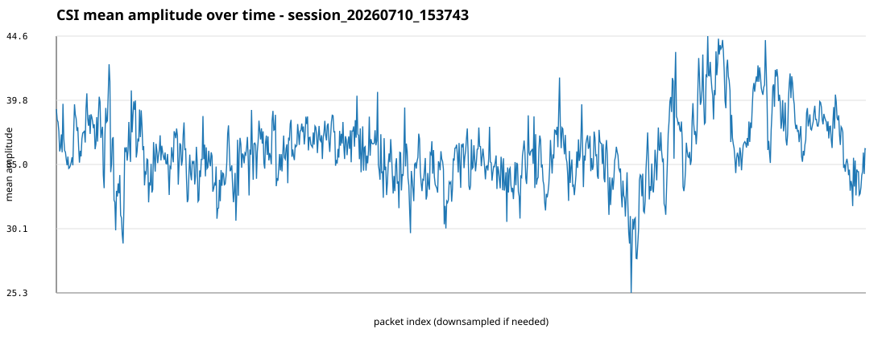
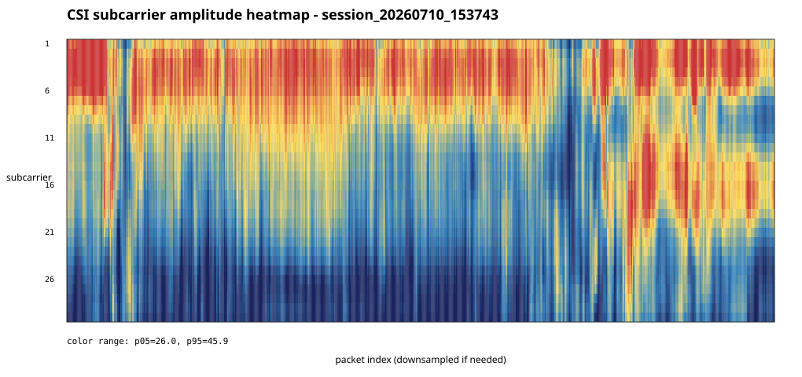
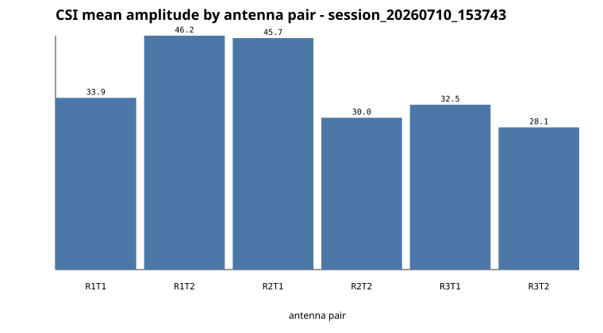

CSI file: data/raw/session_20260710_153743/csi.dat
{
"agc_values": {
"29": 7,
"30": 43,
"31": 50,
"32": 5,
"33": 4,
"34": 18,
"35": 182,
"36": 803,
"37": 1631,
"38": 717,
"39": 801,
"40": 613,
"41": 42
},
"amplitude": {
"max": 127.05904139414872,
"mean_of_packet_means": 36.050330718534525,
"mean_of_packet_stds": 20.632288080859638,
"min": 0.0
},
"antenna_dimensions": {
"3x2": 4916
},
"file_bytes": 1941820,
"first_record": {
"Nrx": 3,
"Ntx": 2,
"agc": 40,
"bfee_count": 4273,
"code": 187,
"csi_len": 372,
"entry_size": 393,
"noise": -68,
"perm": [
3,
2,
1
],
"rate_hex": "0x210f",
"record_index": 0,
"rssi_a": 37,
"rssi_b": 39,
"rssi_c": 39,
"timestamp_low": 2922501120
},
"last_record": {
"Nrx": 3,
"Ntx": 2,
"agc": 39,
"bfee_count": 9188,
"code": 187,
"csi_len": 372,
"entry_size": 393,
"noise": -68,
"perm": [
2,
3,
1
],
"rate_hex": "0x210f",
"record_index": 4915,
"rssi_a": 36,
"rssi_b": 41,
"rssi_c": 39,
"timestamp_low": 2985484514
},
"noise_values": {
"-65": 39,
"-66": 149,
"-67": 1091,
"-68": 1500,
"-69": 1044,
"-70": 486,
"-71": 238,
"-72": 201,
"-73": 27,
"-77": 20,
"-81": 15,
"-82": 9,
"-83": 17,
"-85": 28,
"-86": 31,
"-87": 13,
"-88": 8
},
"path": "data/raw/session_20260710_153743/csi.dat",
"rates": {
"0x010d": 40,
"0x010e": 111,
"0x010f": 13,
"0x210f": 4752
},
"record_count": 4916,
"rssi_average": {
"rssi_a": 35.82139951179821,
"rssi_b": 39.902563059397885,
"rssi_c": 39.45097640358015
}
}

